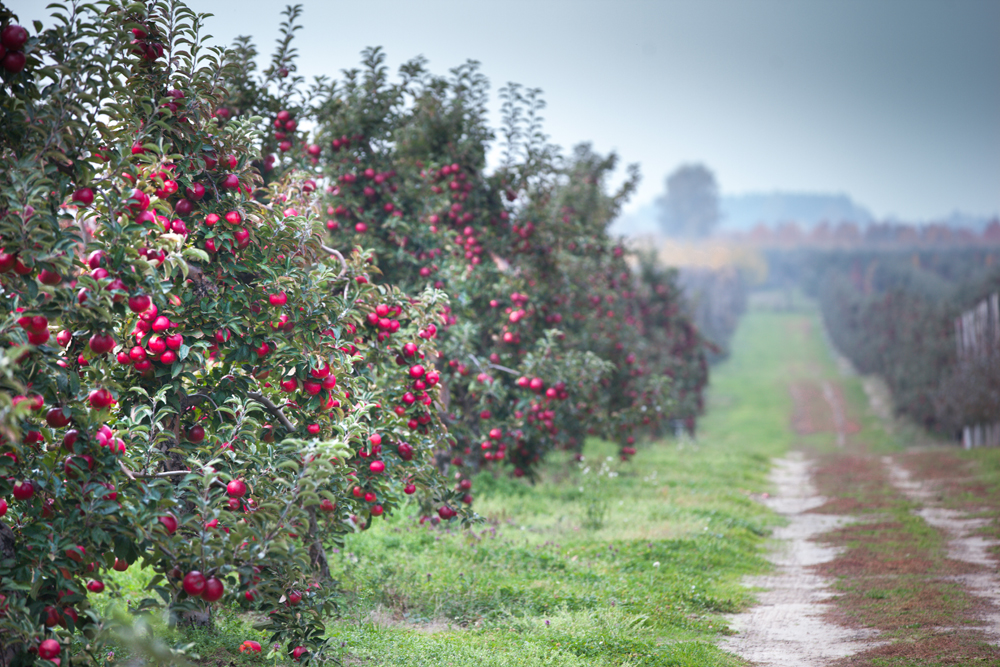
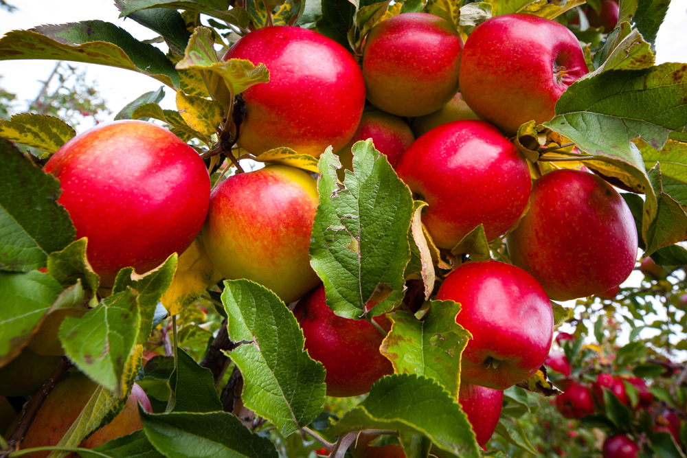

Produkcja jabłek w naszym gospodarstwie ma już ponad stuletnią tradycję i już cztery pokolenia zmagają się z trudem wyprodukowania owoców.Gospodarstwo przeszło ewolucję w technice i technologii produkcji w taki sposób, aby produkować zdrowe i pyszne jabłka, które wyglądem, smakiem i zawartością witamin cieszą smakoszy na całym Świecie! No właśnie… Nasze owoce trafiają na różne kontynenty. Jadają je oczywiście Polacy i inni Europejczycy, ale również Afrykanie, Arabowie, Azjaci i nawet Amerykanie. Zmagamy się z matką naturą, która zmusza nas do stosowania różnego rodzaju technik zabezpieczania jabłoni przed gradem i przymrozkami wiosennymi (sieci przeciwgradowe, zraszanie przeciwprzymrozkowe). Jabłka są u nas dostępne niemal cały rok dzięki przechowywaniu ich w specjalistycznych chłodniach, które umożliwiają zachowanie wysokiej jakości oraz walorów smakowych.  